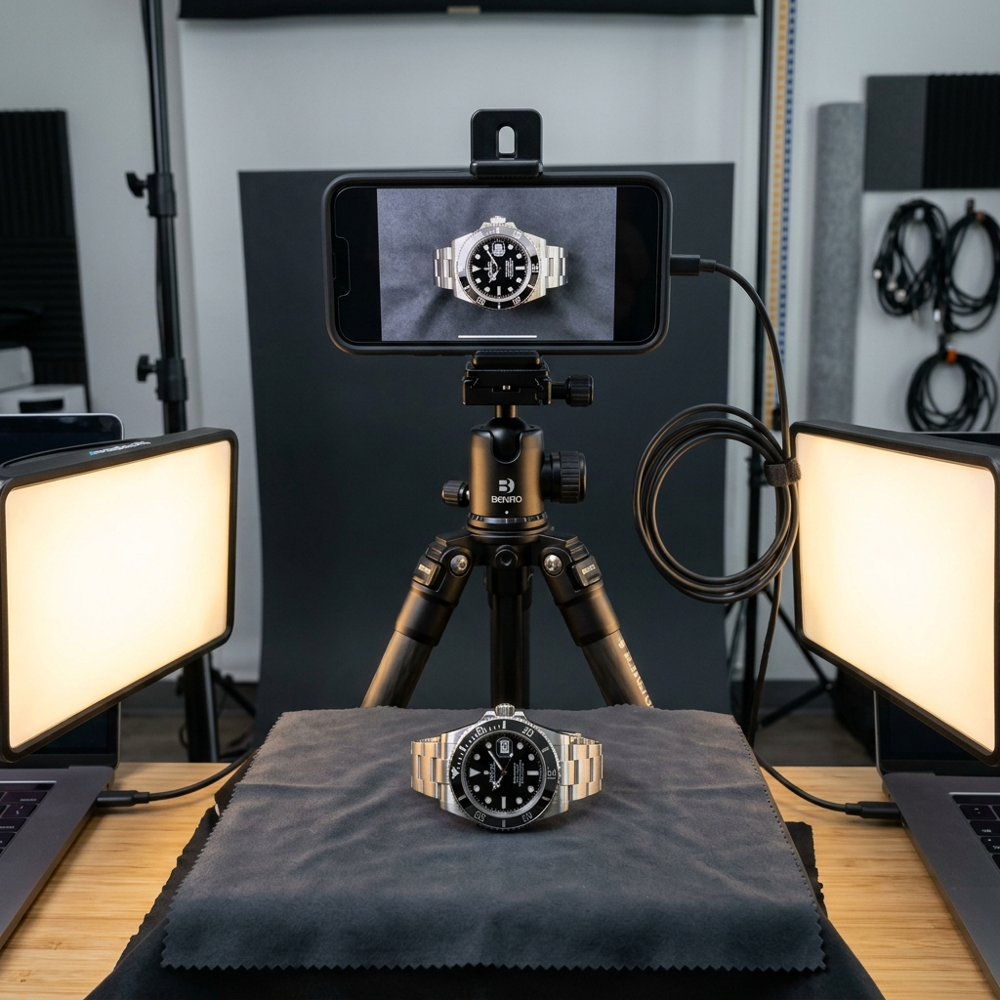
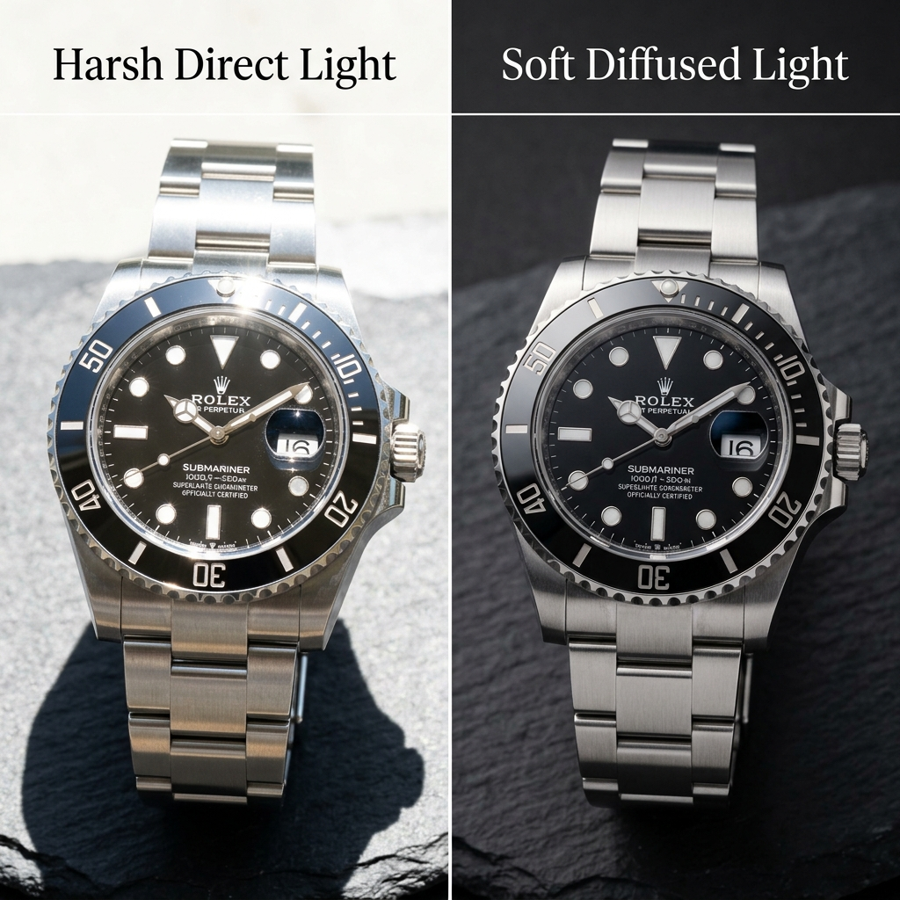
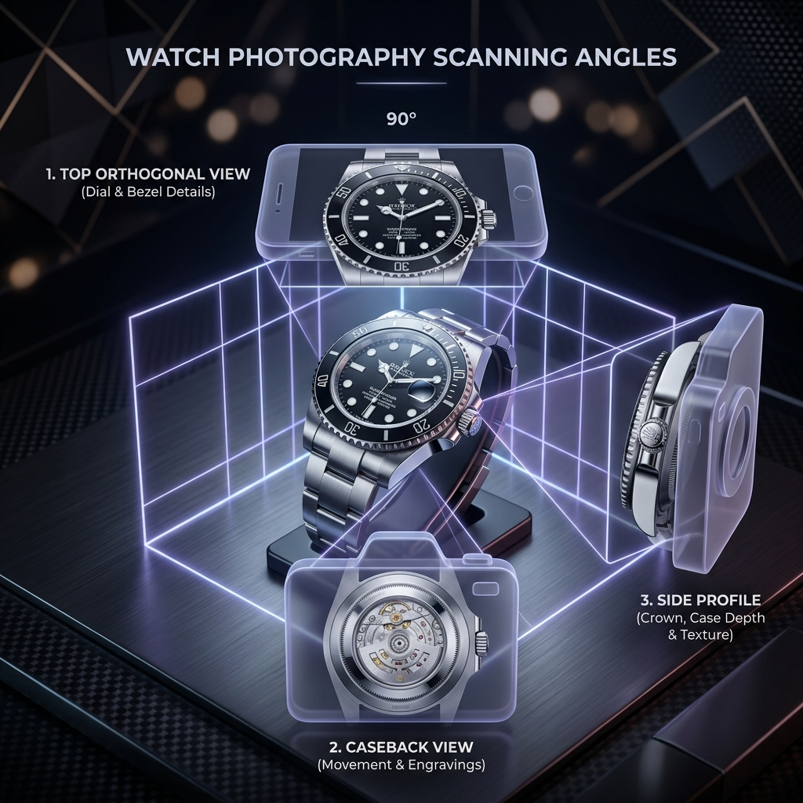

Follow this step-by-step interactive cinematic guide to calibrate your capture workflow for high-accuracy DINOv3 visual RAG verification.

Chapter 01
The Goal of Visual Scanning
Our AI verification model (DINOv3) runs purely on optical truth. To detect micrometric anomalies, dial spacing variations, and bevel angles, your photos must serve as a high-fidelity visual blueprint.
✓Capture high-density steel finishes
SURFACE CLEAN: 100%
Chapter 02
Wipe & Clean Prep
Before capturing any shots, always wipe the watch face and case thoroughly. Tiny dust motes, invisible body oils, and smudged fingerprints can be misread by the neural networks as printing flaws or scratches.
✓Use clean lint-free microfiber cloth

Harsh Glare
Soft Diffused
↔
Chapter 03
Soft, Diffused Lighting
Never use direct smartphone camera flash. Direct flash creates harsh white glare hotspots that blow out details. Drag the slider on the left to see how soft diffused side light reveals the true grain of metal.
✓Avoid direct camera flash completely

LASER FOCUS: LOCKED
CAMERA ZOOM: 2.0x
Chapter 04
Camera Angle & Focus
Hold your phone perfectly parallel to the watch face. Standard wide-angle lenses create "barrel distortion" when held too close, warping dial dimensions. To prevent this, stand back slightly and zoom in to 2x.
✓Stand back and use 2x zoom option
Chapter 05
The 3 Critical Scanning Shots
For standard and professional verification tiers, our neural models process a multi-angle ensemble: 1. Front face dial for details, 2. Caseback for movement engravings, and 3. Side crown profile.
✓Front Dial, Caseback, and Side Profile
0:00
1080P AUTO
🎙
Voiceover Narration (Script)
"Welcome to the Luxury Authenticator Photography Academy. Our AI verification model runs on optical truth..."